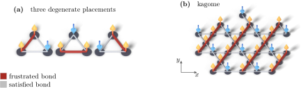
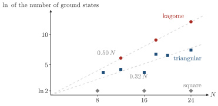
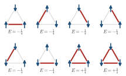

Page 3 of 11 of this session
8.4 Frustration as the route to a quantum spin liquid
When can the ground state of a Heisenberg magnet avoid magnetic order? We will now see that the route is frustration, meaning that no spin configuration satisfies every bond at the same time. For Ising spins on the triangular and kagome lattices this gives a number of classical ground states that grows exponentially with the number of sites, and this large set is what quantum fluctuations can mix.
\[|GS\rangle = \frac{1}{\sqrt2}\Big(|{\uparrow\downarrow}\rangle - |{\downarrow\uparrow}\rangle\Big), \qquad \langle \mathbf S_i \rangle = 0. \tag{8.3}\]
This is the singlet of two spins one half, the ground state of the Heisenberg dimer \(J\,\mathbf S_0\cdot\mathbf S_1\) with \(J>0\), at the energy \(-3J/4\). It is unique and has \(\langle\mathbf S_i\rangle=0\) on both sites. Time reversal maps it to itself, so it does not break time-reversal symmetry. In this section we ask when a lattice of many spins can have a ground state of this kind.
Before we build a macroscopic version of (8.3), we need to know when the ground state of a Heisenberg model stays time-reversal symmetric in this way. The magnets of Session 1 and Session 6 did not, since they ordered spontaneously. The general rule is frustration, which we first met in Section 6.10. The standard example is a triangular plaquette with antiferromagnetic coupling on all three bonds. Any two spins can point in opposite directions, but then the third spin is parallel to one of the two. So one of the two remaining bonds is not satisfied, and no spin configuration can satisfy all three bonds at the same time.
The steps Counting the ground states of the triangle
Let us take the simplest case first, two Ising spins \(S^z_0,S^z_1=\pm\tfrac12\) with one bond, \(H=J\,S^z_0S^z_1\). We write \(M=S^z_0+S^z_1\) for the total \(S^z\). Since \((S^z_i)^2=\tfrac14\) for every spin,
\[M^2=\frac12+2\,S^z_0S^z_1, \qquad\text{so}\qquad H=\frac J2\Big(M^2-\frac12\Big).\]
The energy depends only on \(M\). It is lowest for \(M=0\), the two antiparallel states at \(-J/4\), and the bond is satisfied.
On the triangle every pair of sites is a bond, so the same step works with three spins and \(M=S^z_0+S^z_1+S^z_2\),
\[M^2=\frac34+2\sum_{\langle ij\rangle}S^z_iS^z_j, \qquad\text{so}\qquad H=\frac J2\Big(M^2-\frac34\Big).\]
Three spins one half cannot have \(M=0\), since \(M\) is a sum of three half-integers. The lowest value is \(|M|=\tfrac12\), with two spins up and one down, or the opposite. Each case has 3 configurations, one for each position of the minority spin, so there are \(3+3=6\) ground states at \(\frac J2\big(\frac14-\frac34\big)=-\frac J4\). The two aligned configurations have \(M=\pm\tfrac32\) and the energy \(\frac J2\big(\frac94-\frac34\big)=+\frac34J\). Three satisfied bonds would give \(3\cdot(-\tfrac J4)=-\tfrac34J\), and no configuration reaches it.
This geometric frustration gives many classical ground states that are degenerate, which means that they have the same energy and different spin configurations. When we add quantum fluctuations, they mix these degenerate configurations into one quantum superposition, which in general does not break time-reversal symmetry.
This is the reason why the triangular and kagome lattices, which are both built only from triangles, are the standard place to look for quantum spin liquid physics. An antiferromagnetic Heisenberg model on either lattice is a real candidate for a QSL ground state, in the right range of couplings. This is also the reason why herbertsmithite, a compound with spin-\(1/2\) sites on a kagome lattice, is the main real candidate material. A second route to frustration, from the bond-dependent Kitaev interaction on the honeycomb lattice, is in Section 6.12. Figure 8.2 shows the geometry behind the whole argument. It is a frustrated triangle with its degenerate configurations, and the kagome lattice that is built only from such triangles. The plaquette without frustration and the single frustrated triangle are the ones of Figure 6.3.

On a triangle of Ising spins with antiferromagnetic bonds, no configuration satisfies all three bonds, and six of the eight configurations are ground states. On a lattice built from triangles this degeneracy becomes macroscopic, meaning that the number \(W\) of classical ground states of \(N\) sites grows exponentially,
\[W\sim e^{sN}, \qquad s\approx0.32 \ \text{(triangular)}, \qquad s\approx0.50 \ \text{(kagome)},\]
while the square lattice, which is bipartite, has only the two Néel states.
Schematic 8.3 shows this count on small periodic clusters.

In the kagome antiferromagnet ZnCu\(_3\)(OH)\(_6\)Cl\(_2\), with spin-\(1/2\) sites, the magnetic susceptibility gives a Curie-Weiss temperature of about \(-300\) K, and no magnetic order is observed down to \(50\) mK. The measurement is in this article. What follows is our own reading. The size of the Curie-Weiss temperature is set by the antiferromagnetic exchange, and in mean field a magnet without frustration orders at a temperature of this order. Here the order is still absent at a temperature about \(6000\) times lower, which fits a lattice made only of frustrated triangles.
Three Ising spins sit on a triangle with antiferromagnetic bonds. How many of the 8 configurations are classical ground states?
Show the answers
- A. ✗ False
This is false. There is no Néel configuration on a triangle. The state \(\uparrow\downarrow\uparrow\) has one unsatisfied bond, with energy \(-1/4\), and so do its five partners, so there are six degenerate states and not two.

The eight Ising configurations of an antiferromagnetic triangle. A red bond joins two parallel spins and costs energy. Six configurations have one red bond and the lowest energy. - B. ✓ True
This is true. The two fully aligned configurations have three unsatisfied bonds and energy \(+3/4\). Each of the other six has one unsatisfied bond and energy \(-1/4\), which is the minimum, so the ground state is sixfold degenerate.
- C. ✗ False
This is false. The unsatisfied bond can be any of the three, but for each choice there are two states, the configuration and its spin flip. So \(\uparrow\uparrow\downarrow\) and \(\downarrow\downarrow\uparrow\) are both ground states, giving 6.
We take the Heisenberg model on the square lattice,
\[H=J\sum_{\langle ij\rangle}\mathbf S_i\cdot\mathbf S_j, \qquad J>0.\]
Why is it not a good place to look for a spin liquid?
Show the answers
- A. ✓ True
This is true. On a bipartite lattice all bonds are satisfied at the same time by two sublattices of opposite spin. There is then no frustration and no macroscopic degeneracy for the quantum fluctuations to mix.

Figure 6.3, shown again. Look at panel (a), where all bonds of the bipartite plaquette are satisfied. - B. ✗ False
This is false. The kagome lattice also has four neighbors, like the square lattice, and it is a leading candidate for a spin liquid. The number of neighbors is not what decides it.
- C. ✗ False
This is false. The triangular and kagome lattices are two-dimensional and they are the standard places to look for spin liquids. Frustration and not the dimension is what matters.
Each picture is a cluster of Ising spins \(S^z_i=\pm\tfrac12\), one on each circle. Every line, solid or dashed, is a bond. The energy is
\[H=J\sum_{\langle ij\rangle}S^z_iS^z_j, \qquad J>0.\]
In which cluster can every bond be satisfied?
Show the answers
- A. ✗ False
This is false. Two spins of the triangle can be antiparallel, but the third one is then parallel to one of them. The lowest energy is \(-J/4\), with one unsatisfied bond, and not the \(-3J/4\) of three satisfied bonds.
- B. ✓ True
This is true. The square is bipartite. With up spins on one diagonal and down spins on the other, every bond joins two antiparallel spins, and the energy is \(4\cdot(-J/4)=-J\).
- C. ✗ False
This is false. Every pair of the four sites is a bond, so the cluster is made of four triangles. The best we can do is two spins up and two down, and the two parallel pairs cost energy. The lowest energy is \(-J/2\), and not the \(-3J/2\) of six satisfied bonds.
Four Ising spins \(S^z_i=\pm\tfrac12\) have the energy \(H=J\sum S^z_iS^z_j\) with \(J>0\), summed over the bonds of a cluster. Find the lowest energy and count the ground states on the square plaquette, with its four bonds around the square, and on the tetrahedron, where all six pairs of sites are bonds. In which of the two is every bond satisfied?
Solution
On the square we label the sites \(0,1,2,3\) around it. A bond is satisfied by two antiparallel spins, with \(-J/4\). If site \(0\) is up, the bonds \((01)\) and \((30)\) put the sites \(1\) and \(3\) down, and the bonds \((12)\) and \((23)\) then put site \(2\) up. This configuration satisfies all four bonds, with \(E=-J\), and its flip is the only other one. So the square has \(2\) ground states, the two Néel states, and no frustration.
On the tetrahedron every pair is a bond, as on the triangle, so we can use the total \(M=\sum_iS^z_i\). Since \(\sum_i(S^z_i)^2=1\),
\[M^2=1+2\sum_{i<j}S^z_iS^z_j, \qquad\text{so}\qquad H=\frac J2\big(M^2-1\big).\]
The energy is lowest at \(M=0\), with two spins up and two down, at \(-J/2\). There are \(\binom42=6\) such configurations, and in each of them the two parallel pairs are unsatisfied bonds. Six satisfied bonds would give \(6\cdot(-\tfrac J4)=-\tfrac32J\), so the tetrahedron is frustrated, with a sixfold ground state like the triangle.
The two clusters have the same four sites, and only the bonds differ. The square is bipartite, and the tetrahedron is made of triangles. In a calculation this tells us what to expect before we run it. A bipartite lattice has only the two Néel states, as the square clusters of Schematic 8.3 show, while a lattice of triangles has a degenerate ground state.